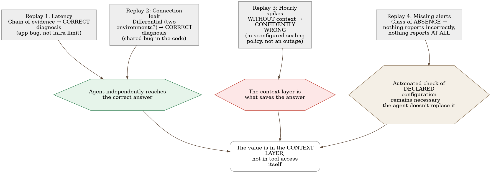
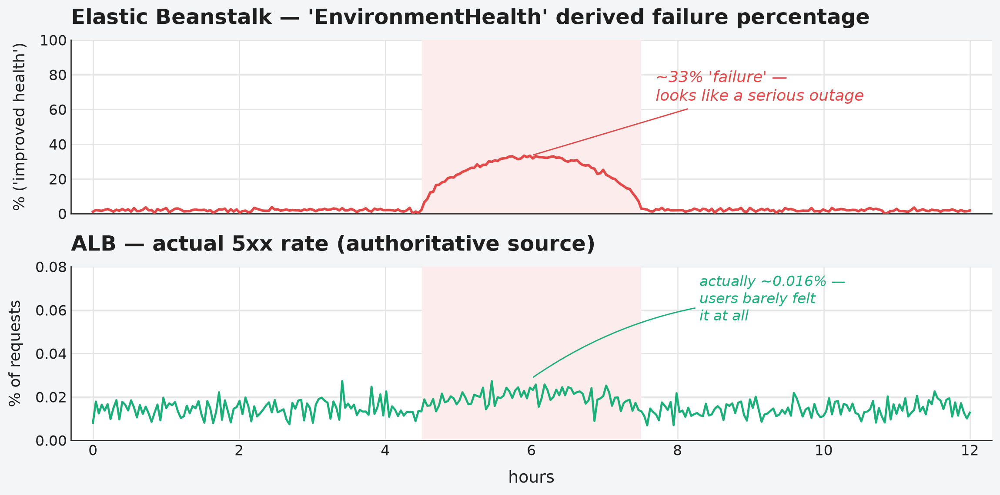

Chapter 28 — AI-assisted observability: an agent that reads telemetry
The locum doctor covering a weekend shift for the regular family physician is, often, an excellent doctor — perhaps even better educated, more confident in general diagnostics, more current with the latest guidelines. But he doesn't know that the patient in room three always has slightly elevated blood pressure when nervous, something the regular doctor knows by heart and doesn't take seriously. He doesn't know that another patient has a rare allergy that isn't recorded in the system in the usual place, but in a note someone added by hand long ago. The locum doctor does exactly what any good doctor would do: tracks symptoms, orders standard tests, reaches a conclusion that is, on paper, perfectly reasonable. The problem isn't his knowledge of medicine. The problem is that a good diagnosis for this patient, in this hospital, depends on a great deal that's never written in any textbook — and is recorded, if it's recorded at all, in notes that only the regular doctor reads.
28.1 The question this chapter answers
A tool that gives an AI agent access to metrics, logs, and traces promises to speed up alert triage. Does that promise hold up against real, past incidents — and, just as important, exactly where does such an agent confidently get it wrong, and why is it harder for an agent than for a human to notice when something is missing rather than reporting something incorrectly?
28.2 How this was done — a practical walkthrough
Method: replaying real incidents, not hypotheticals
Instead of taking the promise "an agent can triage alerts" on faith, the implementation ran a check against four real, already-resolved incidents from its own history — letting the agent independently walk the same trail a human had walked, with the same tools for querying metrics, logs, and traces, and comparing the agent's conclusion against the known, already-confirmed answer. This is the "replay" method — because the answer is known in advance, it's possible to measure precisely where the agent's reasoning matches the human's, and where it diverges.
First replay: a correct diagnosis through a chain of evidence
In the first incident (a service intermittently returned an error after roughly five minutes of waiting), the agent independently assembled a chain of evidence leading to the correct root cause: it recognized that the latency value, repeating exactly at the same boundary, was not a coincidence but the signature of a network device that terminates an idle connection after a fixed time — distinct from the chaotic latency distribution a crash of the application itself would produce. It then correctly redirected attention from "where was the time spent" to "where was the time lost" — discovering that the actual database query took only a fraction of the total time, which ruled out the obvious but wrong hypothesis ("a heavy query") and pointed instead to the service buffering the entire response in memory before it began sending it, rather than streaming it out incrementally. The agent systematically checked and dismissed eight alternative infrastructure hypotheses, each with a single query — exactly the work an agent is most useful for, because it's mechanical and repetitive.
Second replay: a differential that names the cause
In the second incident, the question that actually resolved the diagnosis wasn't "what broke" but "is this happening in one environment or in both." The agent correctly recognized that simultaneous degradation across two independent environments pointed to a shared error in the code, not an infrastructure problem specific to one environment — and, more importantly, it managed to rule out the most obvious suspect (rising database load) by comparing the incident window to the same time window on previous days and discovering that this load level was entirely ordinary, the third-largest of the week, while larger, more common spikes had never caused errors. The correct answer required three separate comparisons — across environments, across days, across subsystems — each cheap on its own, but taken together tedious enough that the first human read of this incident was wrong and had to be corrected the next day.
Third replay: where a naive agent confidently gets it wrong
The third incident is the most valuable precisely because it shows the boundary. The alert claimed that a third of requests were returning errors — sounds like a serious outage, and that was in fact the original, wrong conclusion even the human team reached, corrected only the next day. An agent without additional context would have stopped at the same wrong place: the orchestration platform reports an error percentage derived from its own internal instance health check, not from the actual number of errors at the system's edge. Only checking the authoritative counter — actual errors at the load-balancing device — shows that the real error rate was a thousand times lower than claimed, and that no real user request ever saw an error. The real story was completely different: the autoscaling policy was misconfigured for this type of workload, adding instances slowly and shutting them down too early, in a loop that repeated every hour without ever actually resolving the problem that triggered it. Without additional context about which counter to trust, the agent would have produced a confident, alert-ready, but wrong conclusion.
Fourth replay: the class of absence
The fourth incident belongs to an entirely different class of failure — nothing reported incorrectly; nothing reported at all. It was discovered by accident, when a human noticed a discrepancy on a dashboard, not through any alert. The investigation uncovered six separate lapses of the same shape, introduced over the course of several weeks: links in alerts pointing to a service that no longer exists under that name, telemetry from one job family reporting under the name of an entirely different family because of a copied setting, and jobs whose crashes had been systematically suppressed for days. The implementation drew a sobering conclusion about the division of labor: an agent is useful for checking observed reality (whether telemetry actually exists where it should, whether two sources agree) — but an automated, code-written check of declared configuration remains necessary, because such a check doesn't require access to the telemetry platform and can't be fooled by the artifact of a narrow query time window. The agent doesn't replace that check; it complements it.
The context layer as a real asset
The common thread through all four replays: an agent with generic observability knowledge gets this far, but at exactly the points where specific insight into this particular system is needed — which counter is authoritative, which metric lies by construction, which seemingly innocuous query returns zero instead of an error when something is wrong — generic knowledge stops being enough. The implementation therefore built a small, carefully maintained document of system-specific pitfalls (a "context layer"), loaded into the agent exactly at the moment it is about to query the telemetry platform, not preloaded into every session in advance. The decision to keep this document as something loaded on demand, rather than a permanently present, enormous file weighing down every unrelated session, proved essential to keeping the document useful instead of forgotten.


28.3 Analytical section — external confirmation, and one sobering limit
The protocol for connecting agents to telemetry is new, but already standardized
An open protocol that standardizes how AI agents access external tools and data exists for exactly this purpose — described by its own creator as a universal connector that avoids the need for a bespoke integration per tool. Every major telemetry platform vendor has since shipped its own server for this protocol, with a consistently similar design choice: read-only by default, with explicit flags required to allow writes.
An official recommendation independently confirms the discipline of constraining queries
An independent source from the same industry formulates a philosophy that almost word-for-word matches what the implementation does: an agent should query the telemetry platform the way an experienced engineer would — with surgical precision, testing concrete hypotheses, within strict constraints, not "pouring" a huge volume of raw data into the agent's context. The same source explicitly recommends a mandatory discovery step before querying (which metrics even exist, with which labels) and a cardinality check before running a query that could turn out to be too expensive — mechanisms that prevent exactly the kind of mistake that would otherwise go unnoticed until the bill, or the agent's context, overflows.
A known, named pitfall: a query that succeeds, but lies
An independent risk analysis of this class of tool names exactly the pitfall the implementation uncovered in the third replay: the failure isn't a crash or an error message — it's a query that succeeds and returns a plausible-looking but wrong answer, because a wrong term (a wrong service name, a wrong counter) quietly entered somewhere earlier in the reasoning chain. This confirms that the implementation's fourth replay isn't an exception but a well-known, named failure pattern specific to agents that carry out multiple reasoning steps in sequence.
The context layer as the differentiating factor is independently confirmed outside this implementation
An independent analysis on the same topic formulates an almost identical conclusion to the one the implementation reached through its own experience: raw tool access — what the protocol standardizes — is necessary, but not sufficient. Without organizational knowledge (who owns which service, what the dependencies are, which metrics are known to be misleading), an agent guesses instead of knowing — and the difference between an agent that guesses and an agent that knows is, according to the same analysis, the difference between a demonstration and a system that can actually be used in production. This is independent confirmation that the implementation's "context layer" isn't a byproduct of caution but an identified, named, decisive ingredient.
The recommendation that the agent remain advisory, not authorized to change state
Independent guidance on governing this class of tool in an operational context recommends a clear separation of authority: an agent may gather and connect evidence, but any change to system state (rolling back to a previous version, changing capacity, modifying configuration) requires explicit human approval. The reasoning given in the same source is direct: production diagnostics doesn't have the same firm, verifiable signals that, for instance, code generation has — which can be tested before being applied — which makes autonomous action by an agent in this context inherently riskier. The implementation has already enforced this recommendation structurally: the agent proposes and explains, it does not execute changes itself.
Counterfactual scenario: what would have happened without the context layer
Imagine a team that gave an agent access to the telemetry platform without spending a single minute documenting known pitfalls — trusting that raw access to data was enough. The third replay shows exactly what would happen: the agent would read an alert claiming a serious outage, confirm it without checking against the authoritative source, and escalate a false alarm with full confidence — because nothing in its generic knowledge of observability would warn it that this particular counter, on this particular platform, is known to be unreliable. The damage wouldn't be that the agent did nothing — it would be that it did the wrong thing, fast, and with a convincing explanation.
Let's return to the locum doctor from the start of this chapter. His medical knowledge isn't the problem — the problem is the absence of the note the regular doctor would recognize instinctively. The solution isn't to dismiss the locum doctor, nor to trust him without verification — the solution is to write those notes clearly, update them every time something new is learned, and put them where the locum doctor will actually read them before making a decision. An AI agent that reads telemetry works by the same rule: useful exactly to the extent that the context layer around it is current, honest, and available at the right moment.
28.4 Rules collected from this chapter
- Test an agent's triage promise against real, already-resolved incidents before taking it on faith — replaying with a known answer is a cheap, precise way to measure where the reasoning diverges.
- Build and actively maintain a small, purpose-loaded context layer with known pitfalls specific to your system — generic observability knowledge stops being accurate enough exactly where your system diverges from the textbook.
- Expect that the agent will sometimes return a successful, plausible, but wrong answer — this isn't a rare mistake but a named, well-known failure class specific to agents that reason across multiple steps.
- Keep an automated, code-written check of declared configuration separate from the agent that checks observed reality — one doesn't replace the other; both are needed for the class of failures where something is missing rather than reporting incorrectly.
- Keep the agent advisory for changes to system state — let it propose and explain, not execute — until enough trust and verification has been built for autonomous action to be justified.
28.5 Exercise for the reader
Take one genuinely resolved incident from your team's history, ideally one where the first explanation was wrong and got corrected later. Imagine an AI agent with only generic observability knowledge has to diagnose it from scratch. At exactly which step would the agent likely stop at the same wrong place your team stopped at the first time — and what should be written down, in advance, to stop it there?
Sources used in the analytical section
- Model Context Protocol — Introduction
- How obs-mcp boosts AI-native OpenShift observability — Red Hat Developer
- AI SRE Hallucination Guardrails — Neubird
- The Missing Context Layer: Why Tool Access Alone Won't Make AI Agents Useful in Engineering — SD Times
- AI SRE Agents for Incident Response: Where Should Teams Trust Them? — NHIMG